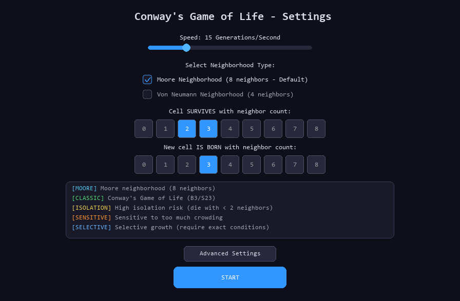
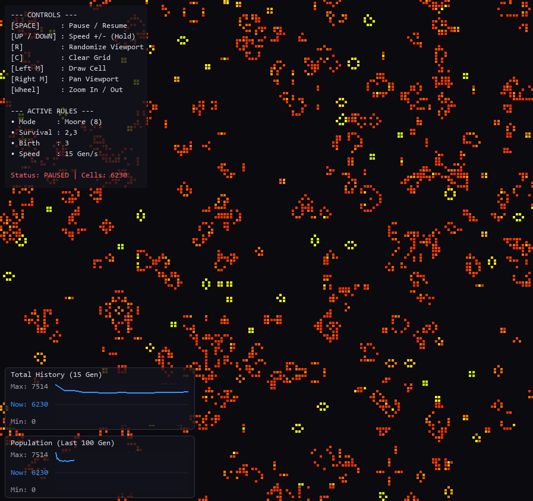
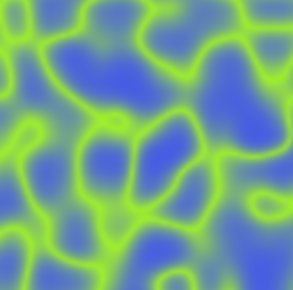
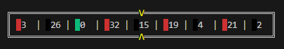
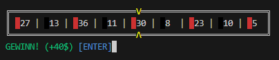
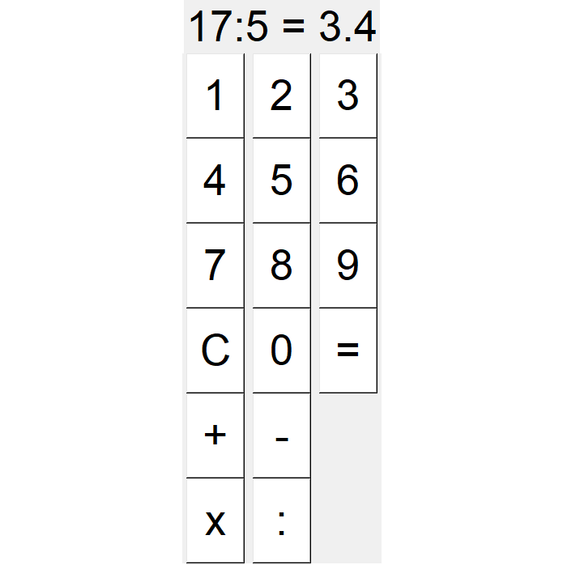

PORTFOLIO / PROJEKTE
Meine Projekte
Eine Auswahl meiner bisherigen Programmierprojekte. Hier gebe ich einen Einblick in die Anwendungen, Simulationen und Experimente, die ich selbst entwickelt habe.
Conway's Game of Life
Eine Simulation des zellulären Automaten, bei dem aus wenigen einfachen Regeln komplexe Muster entstehen.


Perlin Noise Map
Ein Experiment mit Perlin Noise zur Erzeugung zusammenhängender, organisch wirkender Strukturen.

Roulette
Eine selbst entwickelte Roulette-Anwendung für Spielabläufe und Zufall. Das Projekt wurde vollständig ohne KI programmiert.


Python Calculator
Ein grafischer Taschenrechner mit einer Benutzeroberfläche auf Basis von Tkinter. Vollständig ohne KI entwickelt.
